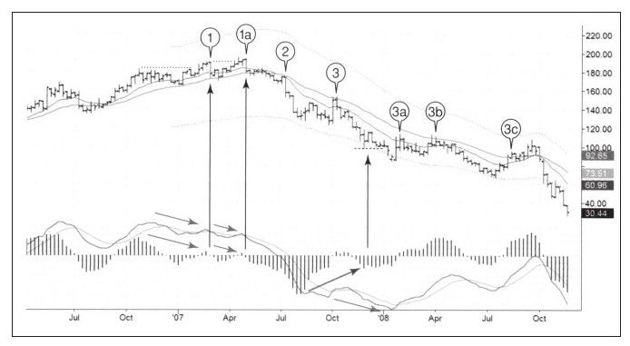

经济危机出现的时候，媒体铺天盖地地报道经济衰退对公众的影响。当失业问题和公司破产成为大众关注的焦点问题时，图9-8展示了熊市对资本家的所作所为。
西尔斯公司（Sears Holding Corporation,SHLD）的大量股票都由机构投资者持有，2007~2009年的熊市使SHLD股价从200美元跌到40美元以下，跌去了80%，尽管不如MGM跌去95%那么多，但还是给市场带来很多血和泪。

我们从本例中可以看到作为个人交易者如何从机构持股的股票大幅下跌赚钱。
·1和1a。当市场升到最后一个高峰时，两个顶背离及向上假突破发生，表明牛市走到尽头。这样明显的信号告诉明智的交易者卖出股票并开始做空。
·2。13周EMA向下穿越26周EMA，确认熊市到来。
·3a，3b，3c。价格反弹到价值区。要知道市场不是直线运动，下跌趋势会不断被间歇性的反弹打破，其中一些反弹速度会非常快。看看3c这次反弹，价格从前期低点反弹了近50%，随后再次崩跌。想想如果持有空单但面对这样规模的反弹是什么样的心情。这是短期做空压力很小但获利很大的案例。
3b之后的区域，股价大幅下跌引发“巴斯克威尔猎犬”信号，这个信号（在《以交易为生》中有描述）是指正常可靠的模式未能引发正常的结果。出现“巴斯克威尔猎犬”信号后，通常做多止损会被打掉，此时我们等待价格从第二个底展开反弹，如果没出现反弹，而是继续向下跌破前期低点，往往意味着基本面可能已经变化，这不是市场层面所能解释的了。在那个点上，交易者不仅要卖出，而且还要在新低出现的时候进一步采取做空的行动。MACD线没有背离，反而在MACD柱背离时创出新低，当这两个指标相互矛盾时，最好不要展开交易。
在分片段看本图之前，我们先看看市场的整体运行轮廓：
·重要的熊市会毁灭价值，因此价格可能会击穿所有合理的下跌预测位。牛市与此恰好相反，它会击穿所有合理的上升预测位。主要的牛市和熊市反映经济的重要趋势以及市场大众心理的变化。市场大众的力量远远强于任何个体，主要趋势的力量非常巨大，其边界往往超乎所有人的想象，创造出很难预测的极限位置。
·我们在看长周期图表时，在主要趋势中驾驭一次交易相对容易。买入并持有（本例中卖出并持有）看起来是通往富裕之路的最简单直接的方法。事实情况远非如此。驾驭一次交易从主要趋势的开始到结束极度困难，你需要拥有超人的耐心并准备在正确的方向上承受巨大的资金回撤。
更现实的目标是使用周线图来定义趋势并用日线图按照周线图指示的方向展开短期交易。聪明的交易者从价格的短期波动中获利，而不是在整个趋势中持有不动。
与机构投资者相比，个人交易者有一个巨大的优势就是可以做空。大多数基金管理机构都禁止做空。2007年夏天，我同亚洲一家大型基金管理人共进早餐。我向他展示了我的图表系统，这些图表指示牛市接近尾声熊市即将来临。这位基金管理人听完后转而对他的同事半开玩笑地说：我们的奖金危险了，我们需要采用保守的交易头寸。他当时管理着百亿资产，但因为不能做空，所以他的手被完全束缚住了。
个人投资者没有这样的限制，他可以通过做空在熊市获利。当机构投资者希望股价反转或焦急地寻找防御性股票时，个人投资者可以在波段做空中不断获利。下一节介绍这种观念在2007~2009年熊市中SHLD股票上的应用。